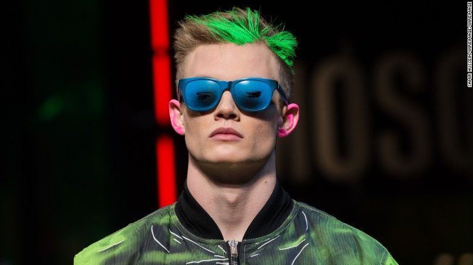
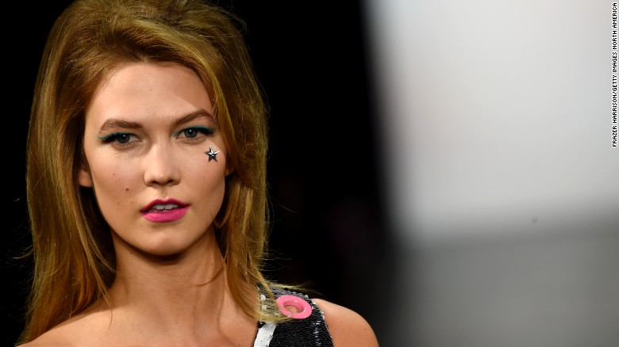

Backstage with Moschino's Jeremy Scott, from London to Milan
Fans of Italian fashion label Moschino are probably some of the more faithful, and easy to spot.
When Jeremy Scott was appointed creative director of the house in 2013, he brought with him an obsession with iconography (he's reinterpreted the logos of Barbie, McDonalds and Coca Cola), bold color and pop culture -- showcasing designs that amused, annoyed and sometimes divided his critics. Scott, born in Kansas City in 1975, showed his first collection for his eponymous label at Paris Fashion Week in 1997 and has since spent almost two decades livening up runways in New York, Milan and London.
This year, he took his menswear show to London for the second time -- staged in an impressive Mayfair church both male and female models, including Lucky Blue Smith, Rob Evans, Molly Bair and Ruth Bell, stormed the runway in super-saturated designs crafted to remind us of the stained glass windows overhead. Admirers of British artists Gilbert & George would have noticed their work plastered across the collection.
Barely skipping a beat, Scott put on a New York show for his namesake label -- sending model Karlie Kloss and others down the catwalk in high-glam, cowgirl-inspired looks. Then, only weeks later during Milan Fashion Week, it was time for Moschino's Autumn-Winter 2016 womenswear collection to be unveiled. Inspired by Italy's Bonfire of the Vanities in 1497 -- a public burning, ordered by Dominican priest Girolamo Savonarola, of all objects that might tempt sin -- dresses literally smoked as models darted and picked their way through a runway strewn with broken mirrors, burnt books and other luxury rubble.
The common thread throughout each of these three events? Showmanship. Scott delivered on fun and high drama at every turn, inviting crowds to lose themselves in his many fantasies. Watch the short documentary above to go behind-the-scenes with Jeremy Scott in all three cities.